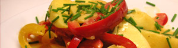

Vegetarische Gulasch
5 von 6die butter erhitzen, zwiebeln und knoblauch darin andünsten. peperoni beifügen und mitdünsten. nach ca. 5 minuten einwenig zucker, paprika und apfelschnitze beifügen. würzen und mit apfelessig und weisswein ablöschen. aufkochen, etwas reduzieren und mit rahm zur gewünschten konsistenz einkochen. mit schnittlauch bestreuen und sofort servieren. dazu wildreis
